CODING AGENTS AS PIXEL WORLD MODELS
traex/DeepSeek-V4.1-Flash · material_0034
点击播放 · 原生 RGB 像素
逐轮保存的候选
回放视频、检查图与代码变化。
每份候选均可单独播放。实际图片检查记录在下方工具轨迹中。
候选 01播放与检查图
点击播放 · 原生 RGB 像素
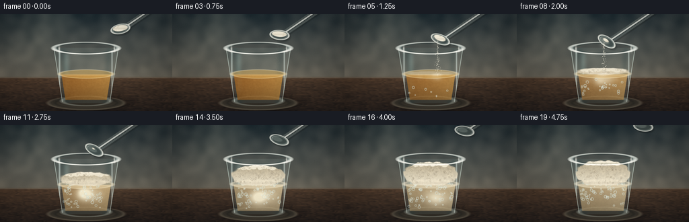
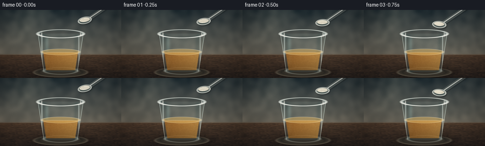
展开代码变化
--- 上一保存版本
+++ 本次保存版本
@@ -0,0 +1,568 @@
+from pathlib import Path
+
+import numpy as np
+from PIL import Image
+from scipy.ndimage import gaussian_filter
+
+import artifact_io
+
+
+CASE_DIR = Path(__file__).resolve().parent
+W, H = 256, 144
+N, FPS = 20, 4.0
+SS = 3
+RW, RH = W * SS, H * SS
+
+
+def mix(a, b, t):
+ t = np.asarray(t, dtype=np.float32)
+ if t.ndim == 2:
+ t = t[..., None]
+ return np.asarray(a, dtype=np.float32) * (1.0 - t) + np.asarray(b, dtype=np.float32) * t
+
+
+def clamp01(x):
+ return np.clip(x, 0.0, 1.0)
+
+
+def smoothstep(edge0, edge1, x):
+ t = clamp01((x - edge0) / (edge1 - edge0))
+ return t * t * (3.0 - 2.0 * t)
+
+
+def soft_inside(signed_distance, edge=0.7):
+ return clamp01(0.5 - signed_distance / edge)
+
+
+def ellipse_mask(cx, cy, rx, ry, edge=0.75, x=None, y=None):
+ x = X if x is None else x
+ y = Y if y is None else y
+ q = np.sqrt(((x - cx) / rx) ** 2 + ((y - cy) / ry) ** 2)
+ return soft_inside((q - 1.0) * min(rx, ry), edge)
+
+
+def ellipse_ring(cx, cy, rx, ry, thickness=1.0, edge=0.65, x=None, y=None):
+ x = X if x is None else x
+ y = Y if y is None else y
+ q = np.sqrt(((x - cx) / rx) ** 2 + ((y - cy) / ry) ** 2)
+ sd = np.abs((q - 1.0) * min(rx, ry)) - thickness * 0.5
+ return soft_inside(sd, edge)
+
+
+def interval_mask(a, b, edge=0.7):
+ return smoothstep(a - edge, a + edge, Y) * smoothstep(b + edge, b - edge, Y)
+
+
+def capsule_mask(x1, y1, x2, y2, radius, edge=0.65):
+ vx, vy = x2 - x1, y2 - y1
+ denom = vx * vx + vy * vy
+ t = clamp01(((X - x1) * vx + (Y - y1) * vy) / denom)
+ dx = X - (x1 + t * vx)
+ dy = Y - (y1 + t * vy)
+ return soft_inside(np.sqrt(dx * dx + dy * dy) - radius, edge)
+
+
+def rotated_coords(cx, cy, angle):
+ a = np.deg2rad(angle)
+ ca, sa = np.cos(a), np.sin(a)
+ dx, dy = X - cx, Y - cy
+ return dx * ca + dy * sa, -dx * sa + dy * ca
+
+
+def rot_ellipse_mask(cx, cy, rx, ry, angle, edge=0.65):
+ u, v = rotated_coords(cx, cy, angle)
+ q = np.sqrt((u / rx) ** 2 + (v / ry) ** 2)
+ return soft_inside((q - 1.0) * min(rx, ry), edge)
+
+
+def rot_ellipse_ring(cx, cy, rx, ry, angle, thickness=0.8, edge=0.55):
+ u, v = rotated_coords(cx, cy, angle)
+ q = np.sqrt((u / rx) ** 2 + (v / ry) ** 2)
+ sd = np.abs((q - 1.0) * min(rx, ry)) - thickness * 0.5
+ return soft_inside(sd, edge)
+
+
+def composite(img, mask, color, opacity=1.0):
+ alpha = clamp01(mask * opacity)[..., None]
+ return img * (1.0 - alpha) + np.asarray(color, dtype=np.float32) * alpha
+
+
+def screen_add(img, mask, color, strength=1.0):
+ add = clamp01(mask * strength)[..., None] * np.asarray(color, dtype=np.float32)
+ return 255.0 - (255.0 - img) * (255.0 - add) / 255.0
+
+
+def draw_soft_dot(img, cx, cy, radius, color, opacity=1.0, ring=False):
+ pad = int(np.ceil(radius * 3.0 + 2.0)) * SS
+ ix, iy = int(round(cx * SS)), int(round(cy * SS))
+ x0, x1 = max(0, ix - pad), min(RW, ix + pad + 1)
+ y0, y1 = max(0, iy - pad), min(RH, iy + pad + 1)
+ if x0 >= x1 or y0 >= y1:
+ return img
+ lx = (np.arange(x0, x1, dtype=np.float32) + 0.5) / SS
+ ly = (np.arange(y0, y1, dtype=np.float32) + 0.5) / SS
+ dx = lx[None, :] - cx
+ dy = ly[:, None] - cy
+ dist = np.sqrt(dx * dx + dy * dy)
+ if ring:
+ alpha = np.exp(-((dist - radius) / max(0.35, radius * 0.26)) ** 2)
+ alpha *= smoothstep(radius * 1.25, radius * 0.75, dist)
+ else:
+ alpha = np.exp(-(dist / max(0.3, radius)) ** 2 * 2.2)
+ region = img[y0:y1, x0:x1]
+ region[:] = composite(region, alpha, color, opacity)
+ return img
+
+
+def draw_ring(img, cx, cy, radius, color, opacity=1.0, thickness=0.38):
+ pad = int(np.ceil(radius * 3.0 + 2.0)) * SS
+ ix, iy = int(round(cx * SS)), int(round(cy * SS))
+ x0, x1 = max(0, ix - pad), min(RW, ix + pad + 1)
+ y0, y1 = max(0, iy - pad), min(RH, iy + pad + 1)
+ if x0 >= x1 or y0 >= y1:
+ return img
+ lx = (np.arange(x0, x1, dtype=np.float32) + 0.5) / SS
+ ly = (np.arange(y0, y1, dtype=np.float32) + 0.5) / SS
+ dx = lx[None, :] - cx
+ dy = ly[:, None] - cy
+ dist = np.sqrt(dx * dx + dy * dy)
+ alpha = np.exp(-((dist - radius) / max(0.22, thickness)) ** 2)
+ region = img[y0:y1, x0:x1]
+ region[:] = composite(region, alpha, color, opacity)
+ return img
+
+
+def draw_bubble(img, cx, cy, radius, tint=(224, 244, 241), opacity=0.8):
+ if radius < 0.55:
+ return img
+ draw_ring(img, cx, cy, radius, (235, 250, 246), opacity * 0.78, 0.34 + radius * 0.08)
+ draw_soft_dot(
+ img,
+ cx - radius * 0.32,
+ cy - radius * 0.34,
+ max(0.28, radius * 0.28),
+ tint,
+ opacity * 0.9,
+ )
+ return img
+
+
+def cup_halfwidth(y):
+ return 48.0 + (y - 50.0) * (-13.0 / 82.0)
+
+
+rng = np.random.default_rng(20261111)
+X, Y = np.meshgrid(
+ (np.arange(RW, dtype=np.float32) + 0.5) / SS,
+ (np.arange(RH, dtype=np.float32) + 0.5) / SS,
+)
+
+wall_noise = gaussian_filter(rng.normal(size=(RH, RW)).astype(np.float32), 16.0)
+wall_noise /= max(1e-5, wall_noise.std())
+fine_noise = gaussian_filter(rng.normal(size=(RH, RW)).astype(np.float32), 2.2)
+fine_noise /= max(1e-5, fine_noise.std())
+wood_noise = gaussian_filter(rng.normal(size=(RH, RW)).astype(np.float32), (2.0, 13.0))
+wood_noise /= max(1e-5, wood_noise.std())
+
+
+def make_background():
+ wall_t = clamp01(Y / 96.0)
+ wall = mix((42, 55, 61), (105, 101, 91), wall_t)
+ wall += wall_noise[..., None] * np.array((4.5, 4.0, 3.4), dtype=np.float32)
+
+ diagonal = np.exp(-((X + 0.45 * Y - 73.0) / 35.0) ** 2)
+ window = diagonal * smoothstep(100.0, 5.0, Y) * 17.0
+ wall += window[..., None] * np.array((1.0, 0.95, 0.76), dtype=np.float32)
+
+ counter_t = clamp01((Y - 94.0) / 50.0)
+ counter = mix((76, 57, 43), (43, 36, 33), counter_t)
+ grain = (
+ 4.5 * np.sin(X * 0.31 + Y * 0.05 + 2.3 * wood_noise)
+ + 2.5 * np.sin(X * 0.72 - Y * 0.18 + 1.4 * wood_noise)
+ + 3.0 * wood_noise
+ )
+ counter += grain[..., None] * np.array((1.0, 0.68, 0.42), dtype=np.float32)
+
+ img = wall.copy()
+ counter_mask = smoothstep(92.0, 96.5, Y)
+ img = mix(img, counter, counter_mask)
+
+ seam = np.exp(-((Y - 94.3) / 0.75) ** 2)
+ img = screen_add(img, seam, (124, 119, 101), 0.18)
+ back_glow = np.exp(-((Y - 75.0) / 35.0) ** 2) * np.exp(-((X - 150.0) / 110.0) ** 2)
+ img = screen_add(img, back_glow, (45, 58, 59), 0.13)
+ return np.clip(img, 0.0, 255.0)
+
+
+BG = make_background()
+
+
+def render_shadow(img):
+ shadow = ellipse_mask(132.0, 132.0, 58.0, 11.0, edge=7.0)
+ shadow = gaussian_filter(shadow, 7.0 * SS)
+ img *= 1.0 - 0.44 * shadow[..., None]
+
+ contact = ellipse_mask(128.0, 132.0, 39.0, 5.2, edge=3.2)
+ contact = gaussian_filter(contact, 1.5 * SS)
+ img *= 1.0 - 0.40 * contact[..., None]
+
+ coaster = ellipse_mask(128.0, 132.5, 57.0, 10.5, edge=0.8)
+ coaster_shade = mix((44, 43, 39), (87, 81, 68), clamp01((Y - 123.0) / 20.0))
+ img = composite(img, coaster, coaster_shade, 0.74)
+ coaster_rim = ellipse_ring(128.0, 132.0, 56.5, 10.0, 0.9, 0.8)
+ img = screen_add(img, coaster_rim, (138, 126, 103), 0.28)
+ coaster_inner = ellipse_ring(128.0, 132.0, 46.0, 7.7, 0.7, 0.7)
+ img = composite(img, coaster_inner, (31, 32, 30), 0.40)
+ return img
+
+
+def render_cup_base(img):
+ hw = cup_halfwidth(Y)
+ body_vertical = interval_mask(50.0, 130.5, 0.65)
+ body_sides = soft_inside(np.abs(X - 128.0) - hw, 0.7)
+ body = body_vertical * body_sides
+
+ bottom = ellipse_mask(128.0, 127.8, 36.3, 7.8, edge=0.8)
+ body = np.maximum(body, bottom * interval_mask(124.0, 132.0))
+
+ glass_tint = mix((126, 157, 158), (201, 218, 208), clamp01((X - 82.0) / 92.0))
+ img = composite(img, body, glass_tint, 0.13)
+
+ left_edge = soft_inside(np.abs(X - (128.0 - hw)) - 0.55, 0.5) * body_vertical
+ right_edge = soft_inside(np.abs(X - (128.0 + hw)) - 0.55, 0.5) * body_vertical
+ img = composite(img, np.maximum(left_edge, right_edge), (210, 229, 222), 0.58)
+
+ side_shadow_l = np.exp(-((X - (94.0 + 0.10 * (Y - 70.0))) / 6.0) ** 2)
+ side_shadow_r = np.exp(-((X - (161.0 - 0.08 * (Y - 70.0))) / 5.2) ** 2)
+ img = composite(img, body * (side_shadow_l + side_shadow_r), (40, 63, 66), 0.23)
+
+ streak_l = np.exp(-((X - 88.5) / 1.25) ** 2) * interval_mask(56.0, 123.0, 1.0)
+ streak_r = np.exp(-((X - 166.5) / 1.0) ** 2) * interval_mask(55.0, 117.0, 1.0)
+ img = screen_add(img, np.maximum(streak_l, streak_r) * body, (214, 240, 235), 0.52)
+ broad_glint = np.exp(-((X - 99.0) / 4.2) ** 2) * interval_mask(59.0, 116.0, 3.0)
+ img = screen_add(img, broad_glint * body, (124, 180, 178), 0.20)
+
+ base_glow = ellipse_ring(128.0, 129.0, 35.4, 7.1, 1.4, 0.8)
+ img = screen_add(img, base_glow, (208, 225, 213), 0.33)
+ return img, body
+
+
+def liquid_surface_y(frame):
+ return 89.0 - 1.8 * smoothstep(5.0, 18.0, frame)
+
+
+def render_liquid(img, body, frame):
+ surf = liquid_surface_y(frame)
+ react = smoothstep(3.0, 15.0, frame)
+ inner_hw = np.maximum(4.0, cup_halfwidth(Y) - 5.0)
+ liquid_body = interval_mask(surf + 0.7, 127.5, 0.9) * soft_inside(
+ np.abs(X - 128.0) - inner_hw, 0.8
+ )
+ liquid_body *= body
+
+ amber = mix((163, 102, 36), (208, 153, 73), clamp01((X - 88.0) / 84.0))
+ milky = mix((191, 181, 150), (225, 216, 188), clamp01((X - 88.0) / 84.0))
+ liquid_color = mix(amber, milky, 0.78 * react)
+ liquid_color += (fine_noise[..., None] * 3.0) * np.array((0.7, 0.65, 0.45))
+ img = composite(img, liquid_body, liquid_color, 0.79)
+
+ depth_shade = smoothstep(90.0, 129.0, Y)
+ img = composite(img, liquid_body * depth_shade, (72, 57, 36), 0.20)
+
+ # Turbulent clouds spread down from the powder impact point.
+ plume = np.zeros((RH, RW), dtype=np.float32)
+ for i in range(18):
+ birth = 3.2 + i * 0.33
+ age = frame - birth
+ if age < 0 or age > 9.5:
+ continue
+ px = 128.0 + rng.normal(0.0, 10.0) + np.sin(i * 2.1) * age * 0.7
+ py = surf + 2.0 + age * (2.0 + 0.18 * (i % 5))
+ pr = 4.0 + 0.9 * age
+ plume += np.exp(-(((X - px) / pr) ** 2 + ((Y - py) / (pr * 0.8)) ** 2))
+ plume = gaussian_filter(plume, 1.2 * SS)
+ img = composite(img, plume * liquid_body, (242, 235, 209), 0.17)
+
+ surface = ellipse_mask(128.0, surf, 40.0, 6.4, edge=0.8)
+ surface_rim = ellipse_ring(128.0, surf, 40.0, 6.4, 0.8, 0.6)
+ surface_color = mix((220, 177, 93), (239, 232, 209), react)
+ img = composite(img, surface, surface_color, 0.47)
+ img = screen_add(img, surface_rim, (248, 223, 170), 0.42)
+
+ meniscus = np.exp(-((Y - surf - 1.5) / 1.1) ** 2) * ellipse_mask(
+ 128.0, surf + 1.0, 39.0, 5.4, edge=1.0
+ )
+ img = screen_add(img, meniscus, (246, 224, 183), 0.20)
+ return img, surf
+
+
+def foam_shape(frame, surf):
+ height = 2.2 + 31.0 * smoothstep(4.0, 18.0, frame)
+ center_y = surf - height * 0.46
+ width = 39.5 + 1.5 * smoothstep(7.0, 18.0, frame)
+ local_noise = (
+ 0.85 * np.sin(X * 0.43 + Y * 0.27 + frame * 0.35)
+ + 0.55 * np.sin(X * 0.17 - Y * 0.51 + 1.7)
+ + 0.22 * fine_noise
+ )
+ q = np.sqrt(((X - 128.0) / width) ** 2 + ((Y - center_y) / max(3.0, height * 0.58)) ** 2)
+ foam = soft_inside((q - 1.0 + 0.035 * local_noise) * max(4.0, height * 0.58), 1.1)
+ foam *= interval_mask(surf - height - 3.0, surf + 1.8, 0.8)
+ foam *= soft_inside(np.abs(X - 128.0) - (cup_halfwidth(Y) - 4.0), 0.8)
+ foam *= smoothstep(4.0, 6.3, frame)
+ return foam, height
+
+
+def render_foam(img, frame, surf):
+ foam, height = foam_shape(frame, surf)
+ if frame < 4:
+ return img
+
+ foam_base = mix((190, 177, 150), (246, 239, 219), clamp01((Y - (surf - height)) / max(1.0, height)))
+ foam_base += fine_noise[..., None] * np.array((4.0, 3.7, 3.0))
+ img = composite(img, foam, foam_base, 0.90)
+
+ # Soft foam mounds break up the top silhouette.
+ lumps = np.zeros((RH, RW), dtype=np.float32)
+ top = surf - height
+ for i in range(12):
+ lx = 96.0 + (i + 0.5) * 5.5 + 1.5 * np.sin(i * 1.7)
+ ly = top + 2.0 + 1.2 * np.sin(i * 2.3)
+ lr = 4.0 + 1.2 * (0.5 + 0.5 * np.sin(i * 0.9))
+ lumps = np.maximum(lumps, ellipse_mask(lx, ly, lr, lr * 0.68, edge=1.0))
+ lumps *= smoothstep(5.0, 9.0, frame)
+ img = composite(img, lumps * foam, (250, 246, 230), 0.73)
+
+ shadow = np.exp(-((Y - surf + 1.0) / 2.2) ** 2) * foam
+ img = composite(img, shadow, (142, 126, 101), 0.17)
+ crest = np.exp(-((Y - top) / 1.4) ** 2) * foam
+ img = screen_add(img, crest, (255, 252, 235), 0.36)
+
+ # Tiny bubble texture inside the foam head.
+ foam_bubbles = []
+ for i in range(76):
+ bx = 94.0 + rng.random() * 68.0
+ by = top + 1.0 + rng.random() * max(1.0, height - 2.0)
+ br = 0.38 + rng.random() * 1.05
+ bt = 5.0 + rng.random() * 8.0
+ foam_bubbles.append((bx, by, br, bt, rng.random()))
+ for bx, by, br, bt, phase in foam_bubbles:
+ if frame < bt:
+ continue
+ drift = np.sin(frame * 0.7 + phase * 8.0) * 0.35
+ alpha = 0.42 * smoothstep(bt, bt + 2.0, frame)
+ draw_ring(img, bx + drift, by, br, (135, 123, 103), alpha, 0.23)
+ draw_soft_dot(img, bx + drift - br * 0.2, by - br * 0.25, br * 0.22, (255, 252, 235), alpha)
+ return img
+
+
+def make_bubbles():
+ bubbles = []
+ for i in range(105):
+ bubbles.append(
+ {
+ "birth": 4.0 + rng.random() * 13.5,
+ "x": 96.0 + rng.random() * 64.0,
+ "y": 111.0 + rng.random() * 14.0,
+ "speed": 2.2 + rng.random() * 3.5,
+ "r": 0.55 + rng.random() * 1.75,
+ "amp": 0.4 + rng.random() * 2.1,
+ "phase": rng.random() * np.pi * 2.0,
+ }
+ )
+ return bubbles
+
+
+BUBBLES = make_bubbles()
+
+
+def render_bubbles(img, frame, surf, body):
+ for b in BUBBLES:
+ age = frame - b["birth"]
+ if age < 0:
+ continue
+ by = b["y"] - age * b["speed"]
+ if by < surf + 1.0 or by > 127.0:
+ continue
+ bx = b["x"] + np.sin(age * 1.15 + b["phase"]) * b["amp"]
+ radius = b["r"] * (0.82 + 0.18 * min(1.0, age / 2.0))
+ draw_bubble(img, bx, by, radius, (236, 249, 237), 0.72)
+ if radius > 1.2:
+ draw_ring(img, bx, by, radius * 1.18, (68, 77, 70), 0.16, 0.22)
+
+ # A sparse crown of larger bubbles at the liquid/foam boundary.
+ for i in range(18):
+ bt = 7.0 + (i % 9) * 1.05
+ if frame < bt:
+ continue
+ bx = 99.0 + i * 3.6 + np.sin(i * 1.8) * 1.5
+ by = surf - 1.0 + 1.3 * np.sin(i * 1.2)
+ radius = 1.0 + (i % 4) * 0.45
+ draw_bubble(img, bx, by, radius, (255, 250, 230), 0.62)
+ return img
+
+
+def spoon_keyframes(frame):
+ keys = np.array(
+ [
+ [0.0, 179.0, 22.0, -12.0, 1.00],
+ [2.0, 169.0, 27.0, -3.0, 1.00],
+ [4.0, 150.0, 35.0, 13.0, 0.88],
+ [6.0, 135.0, 40.0, 31.0, 0.53],
+ [9.0, 133.0, 41.0, 35.0, 0.15],
+ [11.0, 140.0, 37.0, 29.0, 0.03],
+ [14.0, 159.0, 22.0, 18.0, 0.00],
+ [17.0, 188.0, 2.0, 8.0, 0.00],
+ ],
+ dtype=np.float32,
+ )
+ f = np.clip(frame, 0.0, 19.0)
+ return tuple(np.interp(f, keys[:, 0], keys[:, i]) for i in range(1, 5))
+
+
+def render_spoon(img, frame):
+ cx, cy, angle, heap = spoon_keyframes(frame)
+ if cy > 50.0 and cx > 184.0:
+ return img
+
+ hx1, hy1 = cx + 5.0, cy - 1.0
+ hx2, hy2 = cx + 77.0, cy - 50.0
+ handle_outer = capsule_mask(hx1, hy1, hx2, hy2, 4.2, 0.65)
+ handle_shadow = capsule_mask(hx1 + 0.9, hy1 + 1.6, hx2 + 0.9, hy2 + 1.6, 4.7, 1.5)
+ img = composite(img, handle_shadow, (20, 25, 25), 0.25)
+ img = composite(img, handle_outer, (86, 96, 96), 0.92)
+
+ # Two thin highlights make the handle read as brushed metal.
+ highlight1 = capsule_mask(hx1 + 0.4, hy1 - 0.9, hx2 + 0.4, hy2 - 0.9, 1.05, 0.45)
+ highlight2 = capsule_mask(hx1 + 0.6, hy1 + 0.9, hx2 + 0.6, hy2 + 0.9, 0.55, 0.35)
+ img = screen_add(img, highlight1 * handle_outer, (232, 237, 230), 0.76)
+ img = composite(img, highlight2 * handle_outer, (40, 50, 51), 0.55)
+
+ bowl_shadow = rot_ellipse_mask(cx + 1.5, cy + 2.2, 15.2, 7.8, angle, 1.5)
+ img = composite(img, bowl_shadow, (19, 24, 24), 0.30)
+ bowl = rot_ellipse_mask(cx, cy, 14.2, 7.1, angle, 0.65)
+ img = composite(img, bowl, (111, 124, 122), 0.97)
+
+ inner = rot_ellipse_mask(cx - 0.6, cy - 0.4, 11.7, 5.3, angle, 0.7)
+ img = composite(img, inner, (53, 65, 65), 0.76)
+ inner_glow = rot_ellipse_mask(cx - 3.2, cy - 1.5, 8.0, 3.4, angle, 1.1)
+ img = screen_add(img, inner_glow * inner, (169, 184, 176), 0.24)
+ bowl_rim = rot_ellipse_ring(cx, cy, 14.0, 6.9, angle, 1.15, 0.45)
+ img = screen_add(img, bowl_rim, (232, 236, 226), 0.74)
+ lower_glint = rot_ellipse_ring(cx + 1.0, cy + 1.1, 12.3, 5.6, angle, 0.55, 0.42)
+ img = screen_add(img, lower_glint * bowl, (211, 223, 214), 0.34)
+
+ if heap > 0.02:
+ a = np.deg2rad(angle)
+ hcx = cx - np.sin(a) * 2.2
+ hcy = cy - np.cos(a) * 2.3
+ heap_mask = rot_ellipse_mask(hcx, hcy, 10.3 * heap + 1.8, 4.7 * heap + 0.8, angle, 0.8)
+ bump = np.exp(-(((X - hcx + 2.0) / 5.0) ** 2 + ((Y - hcy + 1.4) / 2.7) ** 2))
+ heap_mask = np.maximum(heap_mask, bump * heap)
+ heap_mask *= inner
+ img = composite(img, heap_mask, (248, 244, 229), 0.96)
+ heap_shadow = np.exp(-((Y - hcy - 1.5) / 1.2) ** 2) * heap_mask
+ img = composite(img, heap_shadow, (178, 167, 143), 0.24)
+ speck = (fine_noise > 1.35) * heap_mask
+ img = composite(img, speck, (201, 190, 165), 0.28)
+ return img
+
+
+def render_powder(img, frame):
+ cx, cy, angle, heap = spoon_keyframes(frame)
+ if frame < 2.8 or frame > 11.2:
+ return img
+ stream = smoothstep(2.8, 4.2, frame) * (1.0 - smoothstep(9.5, 11.2, frame))
+ pour_x = cx - 4.0
+ pour_y = cy + 2.0
+ surf = liquid_surface_y(frame)
+
+ for i in range(118):
+ phase = rng.random()
+ cycle = 2.3 + rng.random() * 2.0
+ local_t = ((frame - 2.8) / cycle + phase) % 1.0
+ if local_t > 0.92:
+ continue
+ p = local_t / 0.92
+ x = pour_x + (rng.normal(0.0, 2.4) * (0.25 + 0.75 * p))
+ x += np.sin(i * 1.7 + frame * 0.8) * 1.6 * p
+ y = pour_y + (surf + 3.0 - pour_y) * p
+ y += rng.normal(0.0, 0.8)
+ radius = 0.22 + rng.random() * 0.52
+ opacity = stream * (0.28 + 0.68 * np.sin(np.pi * p) ** 0.4)
+ draw_soft_dot(img, x, y, radius, (250, 246, 229), opacity)
+
+ cloud = np.exp(-(((X - (pour_x - 1.0)) / 5.4) ** 2 + ((Y - (pour_y + 2.0)) / 5.0) ** 2))
+ img = screen_add(img, cloud * stream, (232, 226, 207), 0.20)
+
+ impact = ellipse_mask(pour_x - 1.0, surf + 1.0, 7.0, 2.0, edge=2.0)
+ img = screen_add(img, impact * stream, (255, 250, 230), 0.26)
+ return img
+
+
+def render_rim(img):
+ rim = ellipse_ring(128.0, 50.5, 48.0, 8.7, 1.35, 0.55)
+ rim_inner = ellipse_ring(128.0, 50.5, 44.4, 6.7, 0.65, 0.5)
+ img = screen_add(img, rim, (232, 245, 239), 0.70)
+ img = composite(img, rim_inner, (30, 58, 61), 0.26)
+
+ front_rim = rim * smoothstep(49.0, 55.0, Y)
+ img = screen_add(img, front_rim, (255, 255, 246), 0.52)
+
+ left_glint = np.exp(-(((X - 88.0) / 1.3) ** 2 + ((Y - 52.0) / 4.3) ** 2))
+ right_glint = np.exp(-(((X - 170.0) / 1.1) ** 2 + ((Y - 51.5) / 4.0) ** 2))
+ img = screen_add(img, np.maximum(left_glint, right_glint), (251, 255, 247), 0.70)
+ return img
+
+
+def post_process(img, frame):
+ # Gentle bloom around the brightest glass and foam highlights.
+ luminance = img.mean(axis=2)
+ bright = clamp01((luminance - 192.0) / 63.0)
+ bloom = gaussian_filter(bright.astype(np.float32), 2.0 * SS)
+ img = screen_add(img, bloom, (165, 190, 181), 0.12)
+
+ # Film-like vignette and restrained color grade.
+ nx = (X - W * 0.5) / (W * 0.60)
+ ny = (Y - H * 0.48) / (H * 0.64)
+ vignette = clamp01(1.0 - 0.25 * (nx * nx + ny * ny))
+ img *= vignette[..., None]
+ img = np.clip(img, 0.0, 255.0)
+ img = 255.0 * (img / 255.0) ** 1.025
+ img[..., 0] *= 1.018
+ img[..., 1] *= 1.004
+ img[..., 2] *= 0.982
+ grain = rng.normal(0.0, 1.15, size=(RH, RW, 1)).astype(np.float32)
+ img += grain
+ return np.clip(img, 0.0, 255.0)
+
+
+def render_frame(frame):
+ img = BG.copy()
+ img = render_shadow(img)
+ img, body = render_cup_base(img)
+ img, surf = render_liquid(img, body, frame)
+ img = render_bubbles(img, frame, surf, body)
+ img = render_foam(img, frame, surf)
+ img = render_rim(img)
+ img = render_spoon(img, frame)
+ img = render_powder(img, frame)
+ img = post_process(img, frame)
+
+ small = np.asarray(
+ Image.fromarray(np.clip(img + 0.5, 0, 255).astype(np.uint8)).resize(
+ (W, H), Image.Resampling.LANCZOS
+ ),
+ dtype=np.uint8,
+ )
+ return small
+
+
+def main():
+ frames = np.stack([render_frame(i) for i in range(N)])
+ artifact_io.save(frames, CASE_DIR)
+ print(f"Saved {len(frames)} frames to {CASE_DIR}")
+
+
+if __name__ == "__main__":
+ main()
候选 02播放与检查图
点击播放 · 原生 RGB 像素
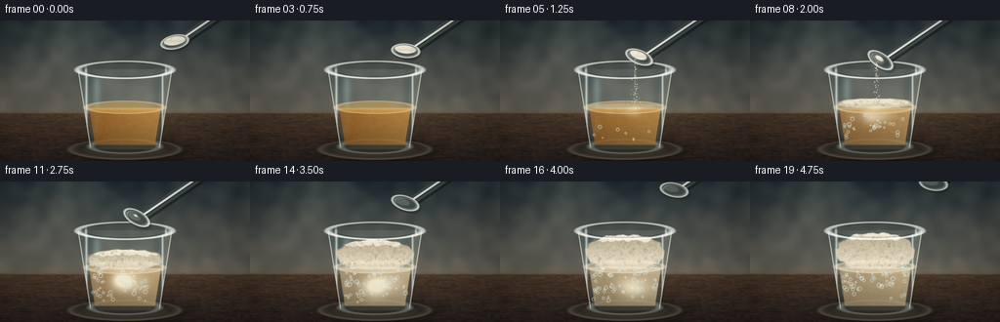
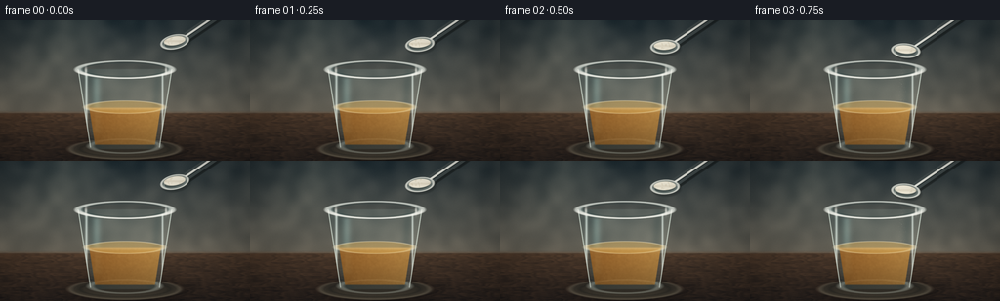
展开代码变化
--- 上一保存版本
+++ 本次保存版本
@@ -225,12 +225,12 @@
bottom = ellipse_mask(128.0, 127.8, 36.3, 7.8, edge=0.8)
body = np.maximum(body, bottom * interval_mask(124.0, 132.0))
- glass_tint = mix((126, 157, 158), (201, 218, 208), clamp01((X - 82.0) / 92.0))
- img = composite(img, body, glass_tint, 0.13)
+ glass_tint = mix((112, 150, 153), (211, 225, 213), clamp01((X - 82.0) / 92.0))
+ img = composite(img, body, glass_tint, 0.16)
left_edge = soft_inside(np.abs(X - (128.0 - hw)) - 0.55, 0.5) * body_vertical
right_edge = soft_inside(np.abs(X - (128.0 + hw)) - 0.55, 0.5) * body_vertical
- img = composite(img, np.maximum(left_edge, right_edge), (210, 229, 222), 0.58)
+ img = composite(img, np.maximum(left_edge, right_edge), (224, 240, 231), 0.69)
side_shadow_l = np.exp(-((X - (94.0 + 0.10 * (Y - 70.0))) / 6.0) ** 2)
side_shadow_r = np.exp(-((X - (161.0 - 0.08 * (Y - 70.0))) / 5.2) ** 2)
@@ -238,9 +238,9 @@
streak_l = np.exp(-((X - 88.5) / 1.25) ** 2) * interval_mask(56.0, 123.0, 1.0)
streak_r = np.exp(-((X - 166.5) / 1.0) ** 2) * interval_mask(55.0, 117.0, 1.0)
- img = screen_add(img, np.maximum(streak_l, streak_r) * body, (214, 240, 235), 0.52)
+ img = screen_add(img, np.maximum(streak_l, streak_r) * body, (221, 246, 240), 0.68)
broad_glint = np.exp(-((X - 99.0) / 4.2) ** 2) * interval_mask(59.0, 116.0, 3.0)
- img = screen_add(img, broad_glint * body, (124, 180, 178), 0.20)
+ img = screen_add(img, broad_glint * body, (132, 190, 186), 0.28)
base_glow = ellipse_ring(128.0, 129.0, 35.4, 7.1, 1.4, 0.8)
img = screen_add(img, base_glow, (208, 225, 213), 0.33)
@@ -429,14 +429,16 @@
hx2, hy2 = cx + 77.0, cy - 50.0
handle_outer = capsule_mask(hx1, hy1, hx2, hy2, 4.2, 0.65)
handle_shadow = capsule_mask(hx1 + 0.9, hy1 + 1.6, hx2 + 0.9, hy2 + 1.6, 4.7, 1.5)
- img = composite(img, handle_shadow, (20, 25, 25), 0.25)
- img = composite(img, handle_outer, (86, 96, 96), 0.92)
+ edge_shadow = capsule_mask(hx1 + 1.2, hy1 + 1.8, hx2 + 1.2, hy2 + 1.8, 4.75, 1.0)
+ img = composite(img, edge_shadow, (20, 25, 25), 0.44)
+ img = composite(img, handle_shadow, (20, 25, 25), 0.31)
+ img = composite(img, handle_outer, (67, 77, 79), 0.98)
# Two thin highlights make the handle read as brushed metal.
highlight1 = capsule_mask(hx1 + 0.4, hy1 - 0.9, hx2 + 0.4, hy2 - 0.9, 1.05, 0.45)
highlight2 = capsule_mask(hx1 + 0.6, hy1 + 0.9, hx2 + 0.6, hy2 + 0.9, 0.55, 0.35)
- img = screen_add(img, highlight1 * handle_outer, (232, 237, 230), 0.76)
- img = composite(img, highlight2 * handle_outer, (40, 50, 51), 0.55)
+ img = screen_add(img, highlight1 * handle_outer, (243, 246, 238), 0.92)
+ img = composite(img, highlight2 * handle_outer, (34, 44, 46), 0.68)
bowl_shadow = rot_ellipse_mask(cx + 1.5, cy + 2.2, 15.2, 7.8, angle, 1.5)
img = composite(img, bowl_shadow, (19, 24, 24), 0.30)
可观测工具轨迹
实际执行的命令与返回图片。
命令 1exit 0
/bin/bash -c 'cat prompt.txt'
命令 2exit 0
/bin/bash -c 'cat GENERATION_RULES.md'
命令 3exit 0
/bin/bash -c 'cat task_spec.json'
命令 4exit 0
/bin/bash -c "find . -maxdepth 2 -type f -printf '%p\\n' | sort | head -200"
命令 5exit 0
/bin/bash -c 'cat artifact_io.py'
命令 6exit 0
/bin/bash -c "sed -n '1,260p' player_template.html"
命令 7exit 0
/bin/bash -c "python - <<'PY'
import importlib.util
for m in ['numpy','PIL','scipy','cv2','imageio','matplotlib']:
print(m, bool(importlib.util.find_spec(m)))
PY"命令 8exit 0
/bin/bash -c 'python generate.py'
命令 9exit 0
/bin/bash -c "python - <<'PY'
from PIL import Image
from pathlib import Path
for i in [2,4,6,9,12,16,19]:
im=Image.open(Path('frames')/f'{i:02d}.png')
im.resize((1024,576), Image.Resampling.NEAREST).save(f'.tmp/frame_{i:02d}_4x.png')
PY"命令 10exit 0
/bin/bash -c "python - <<'PY'
from PIL import Image
import numpy as np
im=np.array(Image.open('frames/02.png'))
for y in [0,10,20,24,25,26,27,28,29,30,40,50,80,94,100,130,143]:
print(y, im[y].mean(0).round(1), im[y,128], im[y].min(), im[y].max())
PY"命令 11exit 0
/bin/bash -c 'python generate.py'
命令 12exit 0
/bin/bash -c "python - <<'PY'
from PIL import Image
from pathlib import Path
for i in [0,2,4,6,9,12,16,19]:
Image.open(Path('frames')/f'{i:02d}.png').resize((1024,576), Image.Resampling.NEAREST).save(f'.tmp/v2_{i:02d}.png')
PY"命令 13exit 1
/bin/bash -c "python - <<'PY'
from pathlib import Path
from PIL import Image
import numpy as np
import artifact_io
files=sorted(Path('frames').glob('*.png'))
assert len(files)==20
frames=np.stack([np.asarray(Image.open(p)) for p in files])
assert frames.shape==(20,144,256,3) and frames.dtype==np.uint8
assert Path('pixels.npz').is_file() and Path('index.html').is_file()
# Verify artifact_io can decode the packed tensor exactly.
with np.load('pixels.npz') as z:
packed=z['pixels']
assert packed.shape==(144,256,20)
decoded=np.stack([(packed[:,:,i]>>16)&255 for i in range(20)], axis=-1)
assert np.array_equal(decoded, frames[...,0])
print('frames:',len(files),'shape:',frames.shape,'fps:',4.0,'duration:',len(files)/4.0,'s')
print('mean RGB:',frames.mean(axis=(0,1,2)).round(2).tolist())
print('first/last changed pixels:',int((frames[0]"'!=frames[-1]).any(axis=2).sum()))
PY'命令 14exit 1
/bin/bash -c "python - <<'PY'
from pathlib import Path
from PIL import Image
import numpy as np
files=sorted(Path('frames').glob('*.png'))
frames=np.stack([np.asarray(Image.open(p)) for p in files])
print('files',len(files),'frames',frames.shape, frames.dtype)
print('artifacts',Path('pixels.npz').is_file(),Path('index.html').is_file())
with np.load('pixels.npz') as z:
packed=z['pixels']
print('packed',packed.shape,packed.dtype)
decoded=np.stack([(packed[:,:,i]>>16)&255 for i in range(20)], axis=-1)
print('decoded',decoded.shape, 'same',np.array_equal(decoded,frames[...,0]), 'maxdiff', np.abs(decoded.astype(int)-frames[...,0]).max())
PY"命令 15exit 0
/bin/bash -c "python - <<'PY'
from pathlib import Path
from PIL import Image
import numpy as np
files=sorted(Path('frames').glob('*.png'))
frames=np.stack([np.asarray(Image.open(p)) for p in files])
assert len(files)==20
assert frames.shape==(20,144,256,3) and frames.dtype==np.uint8
assert Path('pixels.npz').is_file() and Path('index.html').is_file()
with np.load('pixels.npz') as z:
packed=z['pixels']
assert packed.shape==(144,256,20)
decoded=np.stack([(packed>>shift)&255 for shift in (16,8,0)], axis=-1).transpose(2,0,1,3)
assert np.array_equal(decoded, frames)
print('frames:',len(files),'shape:',frames.shape,'fps:',4.0,'duration:',len(files)/4.0,'s')
print('mean RGB:',frames.mean(axis=(0,1,2)).round(2).tolist())
print('first/last changed pixels:',int((frames[0]"'!=frames[-1]).any(axis=2).sum()))
print('"'artifact bytes:',{p:Path(p).stat().st_size for p in ['pixels.npz','index.html','inspection.png']})
PY"命令 16exit 0
/bin/bash -c 'python -m py_compile generate.py && git status --short'
视觉工具实际返回图片 1

视觉工具实际返回图片 2
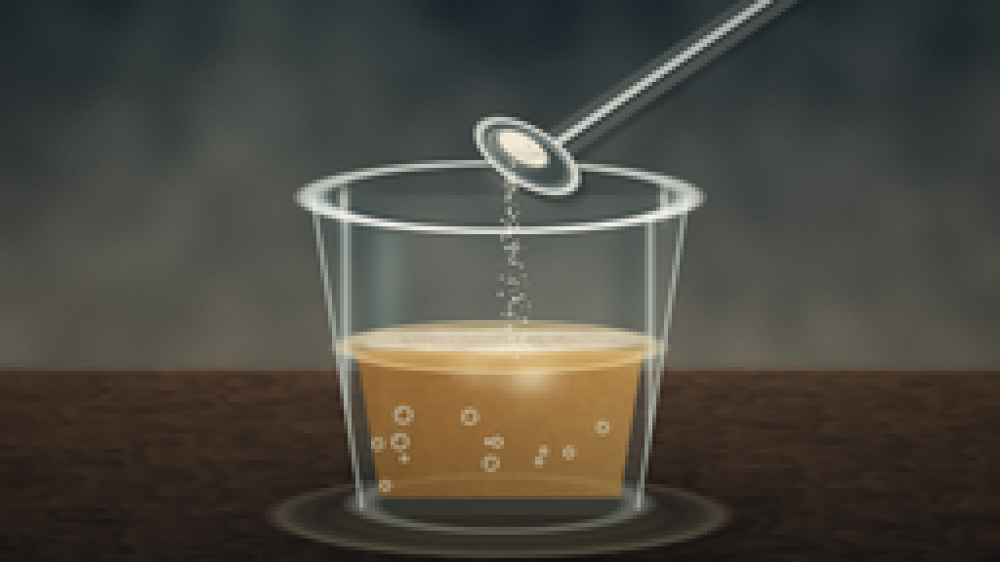
视觉工具实际返回图片 3
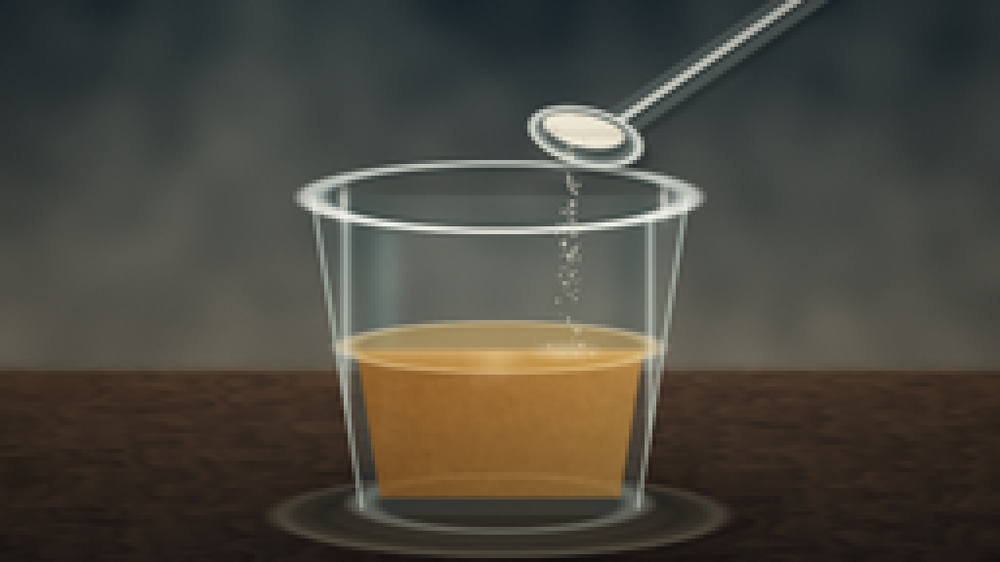
视觉工具实际返回图片 4
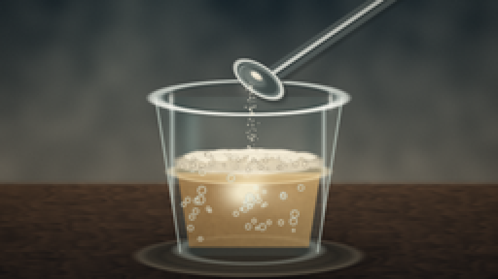
视觉工具实际返回图片 5
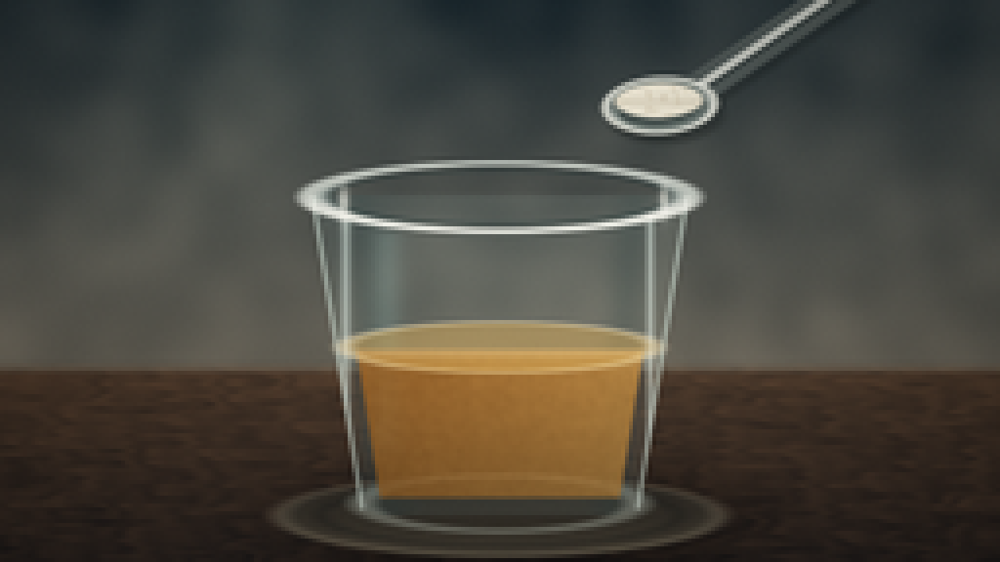
视觉工具实际返回图片 6

视觉工具实际返回图片 7
视觉工具实际返回图片 8
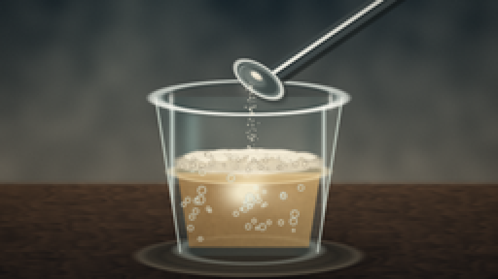
视觉工具实际返回图片 9
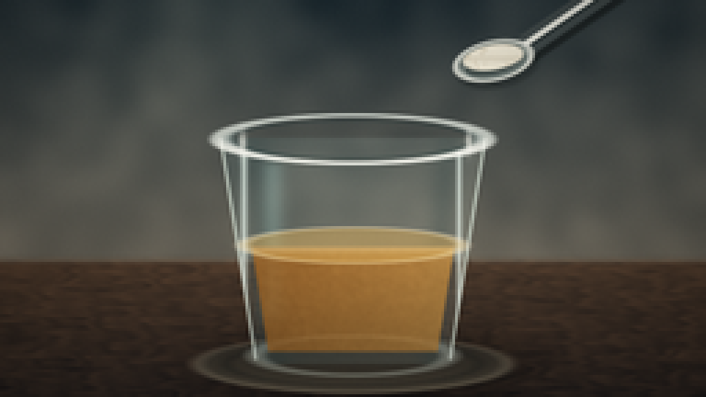
视觉工具实际返回图片 10
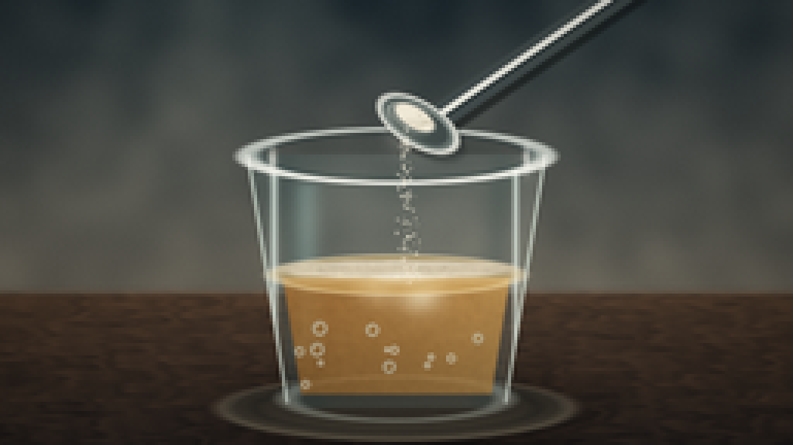
视觉工具实际返回图片 11
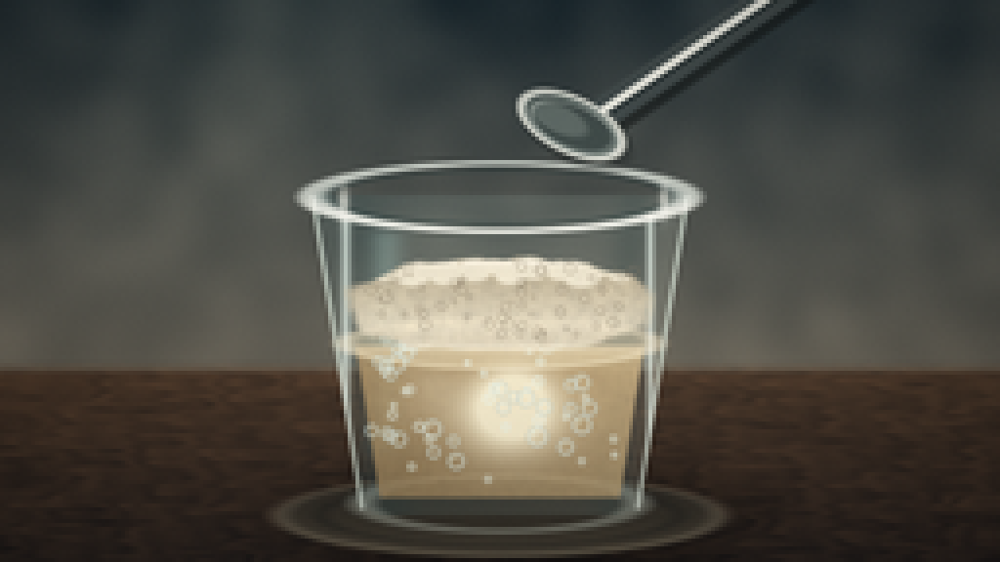
视觉工具实际返回图片 12
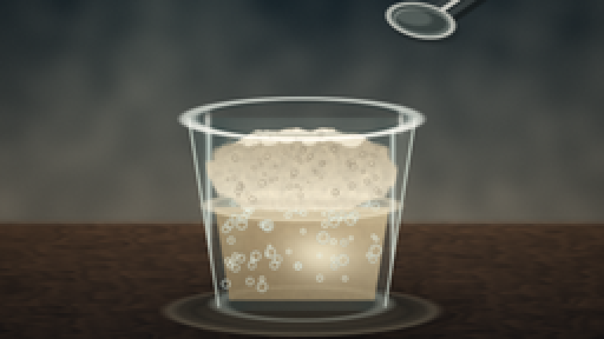
视觉工具实际返回图片 13
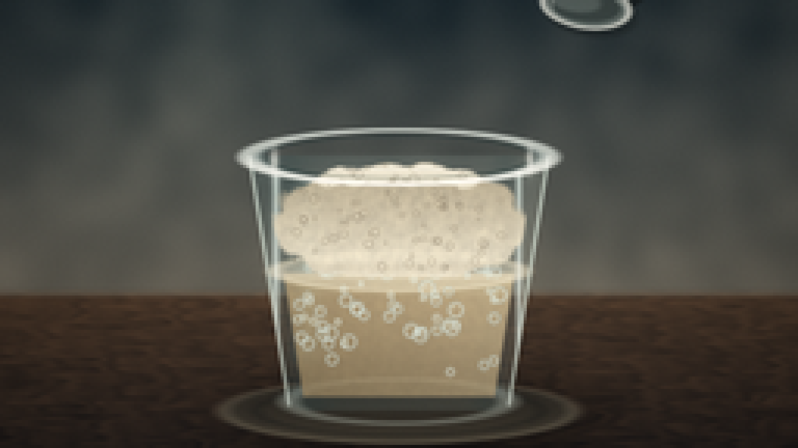
保存候选 2 份；完成命令 16 次；可验证图片返回 13 张。原始 API 响应与完整日志保留在本地。